강력한 확장_Energetic Extension
'stonen&water' 와 '+ Gallery' 공동주관 韓·日 젊은 작가 교류展
2004_0720 ▶ 2004_0815
_waifu2x_photo_noise3_scale.png)
초대일시_2004_0720_화요일_06:00pm
오프닝 특별프로그램_작가소개 및 한일 최근 미술경향에 대한 자유토론
참여작가 Korea_문귀순_김희정_표형렬_전지민_김지영_지정아_문성원_안주미
Japan_아카네 이토_지하루 이시구로_자가 이치로_진 무라타_토모미쯔 타다_사요꼬 콘도_쉰 카와미
기획_김기라_히라마쯔 노부유키 / 어시스트_이명훈
공동주관_한국 스톤앤워터_일본 플러스갤러리
협찬_김기라 문화공작소_아침미디어_www.neolook.com
보충대리공간 스톤앤워터
경기도 안양시 만안구 석수2동 286-15번지 2층
Tel. 031_472_2886
항상 도망가는 사람, 끝없이 도주와 현실적 장애들을 이겨나가며 싸우는, 서로 엇갈리고 교차되고 비동질적인 상황들로 틈을 채우는, 충분하지만 불안정성을 내포한 폭탄 같은, 그런 유기적인, 젊다고 패기 있다고 스스로 자신 있어 정말 터질 것 같은 친구들이 여기에 있다. 이들은 작업을 통해 자기의 차이와 반복을 거듭해가며 대화와 요구를 자신의 운동체로서의 긍정적인 에너지와 긍정적 물음을 던져 에너지원을 만들어 가는 중이다. 이것은 어디까지나 과정이고 그 과정 속에 결과들을 예측할 수 없는 상황의 일면을 내포하고 있으리라. 과정 중엔 정말 힘든 장애와 움푹 파인 상처를 줄 그 무엇이 있을 진데 말이다. 그들은 혼자서 장애를 극복하고 제거할 용기를 가지고 있을까? 그런 사항들까지 그들은 예상하지 않는다. 좋으면 달리고 던지고 부수어 버린다. 천진난만한 어린아이 행동의 불안함을 두고 어른들이 되어 우리들의 시각적 장치를 두고 있는 그 사람이 아프다. ● 이번 프로젝트는 서로간의 관계-가능성을 타진해보고 한국, 일본의 젊은 작가들이 서로에게 교류와 확대 그리고 동기와 교류기회를 주어 보다 멀리 보다 높이 보는 사고관과 세계관, 작업의 동기를 유발할 수 있는 불안정적이지만 희망으로 출발한 프로젝트이다. 우려와 걱정보다 격려와 희망으로 출발한다면 이 프로젝트에 참여한 작가들은 보다 나은 내일의 한국 일본의 현대미술가로 성장하는데 밑거름으로 남을 것을 확신한다. 또한 참여자들이 계속되는 지속적인 관심과 제2, 3의 프로젝트로 발전하길 희망한다. ■ 김기라
일·한의 젊은 작가의 교류전을 보충대리공간 스톤앤워터와 함께 열수 있어 기쁩니다. 플러스 갤러리는 지난 1998년 9월 고난시 호테이쵸의 술창고에서 개최된 전람회를 계기로 70년이 넘은 건물을 1999년부터 2002년까지 "art house 나나후크테이"라는 이름으로 관리, 운영해 오다가 최근 2003년부터 "+Gallery"로 이름을 바꾸어 현대미술의 다양한 의욕적이고 실험적인 작업의 발표장과 이벤트 공간으로 운영하고 있습니다. 말(언어)로써 주고받는 교류도 중요합니다만, 작가의 내면을 표현한 작품을 통해 서로 부딪히는, 말을 넘어선 교류도 의의가 있다고 생각합니다. 이 교류전을 기회로 서로 다양한 것을 서로 배워 각각의 활동분야에서 나름의 발전이 있기를 희망하며, 이번 전시가 일본과 한국의 젊은 작가들의 공통점을 차이점을 함께 찾아 가는 좋은 기회가 되기를 바랍니다. ■ 히라마쯔 노부유키
'강력한 확장' 그것은 이미지의 확장인 동시에 젊은 에너지, 미술(ART)에 대한 개념의 확장일 것이다. 특히 국제화 시대에서의 지역미술, 지역문화공간의 확장일 것이다. 가깝고도 먼 나라, 일본. 마찬가지로 오늘날의 예술도 일상-일반과 가깝고도 멀기만 하다. 과연 이 두개의 거리감의 정체는 무엇일까? 동아시아의 숨 가쁜 근대사처럼 어쩌면 우리네 근·현대미술사도 그렇다. 이런 맥락에서 이번 전시가 말하는 '확장'은 근대적 영토개념의 확장보다는 국경선을 지우는 활동의 확장, 네트워크의 확장, 이야기의 확장이라 할 수 있다. 그리고 '확장'을 수식하는 '강력한' 무엇을 일단은 한국의 '경원대의 힘'과 일본의 '감각의 힘'으로 불러본다. 지난 『최재훈』展을 포함해 경원대 출신들이 올해 상반기 스톤앤워터에 에너지를 실어 나르고 있다. 모쪼록 이번 전시를 통해 경원대 힘의 정체와 나고야 지역의 일본작가, 그들의 감성과 감각에 대해 생각해보는 기회가 되었으면 한다. "곤니찌와 저팬!" ■ 박찬응
_waifu2x_photo_noise3_scale.png)
일상이 진부하다고 느껴질 때 일상은 이미 단단한 가시가 된다. 허락된 은총이 방치되듯 일상은 일상을 상속받고 있다. 시장은 시장으로서 아름답다. 그러나 시장은 시장의 일상을 소외시킨다. 비닐 속의 욕망은 삶의 맥락으로 침투한다. ■ 문귀순
_waifu2x_photo_noise3_scale.png)
나는 꿈을 꾼다. 일상적으로 그저 지나칠 수 있는 눈이 기억을 하는지 뇌의 한쪽에서 기억을 해주는지 알 수는 없지만, 그런 잔상 같은 것들이 남아 꿈속에서 자기의 존재감을 서로 알리려는 듯……. 알 수는 없지만, 존재감 없었던 그것들은 나의 꿈속에서는 늘 멋지게 특별하게 등장하곤 한다. 그것들이 더욱 평범치 않고, 독특하게 등장해서인지 내게만은 특별해진다. 그래서 그들에게 미안한건지, 어떤 것인지는 알 수 없지만 복잡한 심정으로 그들을 기억해내서 작업에 담아낸다. 내 작업은 내 상상력의 시작이며, 재미난 놀이이다. 나를 지루하지 않게끔 해주고, 내 꿈을 한 번 더 기억 해내주게 하는 중요한 역할을 해주기도 한다. ■ 전지민
_waifu2x_photo_noise3_scale.png)
나 자신의 상처를 통한 신체의 변이로부터 작업은 시작되었다. 상처를 입은 신체들을 관찰하거나 혹은 이 시대의 보다 나은 환경이라는 동시대의 보편적 아름다움과-가령 무겁긴 하지만 교통사고의 죽음이나 그로인해 입은 상처들은 문명의 이기적 기계로부터 개인이 사회라는 공간에서 다른 것과의 관계를 갖는 것을 예로 볼 수 있는 것이다. 사회 속에서 개인은 외적이든, 내적인 고통이나 받는다. 외형적이든 내형적이든 간에 상처를 받는 개인은 자의적, 타의적으로 치료하며 다시 사회라는 공간 속에서 관계를 유지하며 살아간다. 이런 관계속에서 상처는 과거의 모습을 돌아보고 미래를 꿈꿀 수 있는 상징이 되는 것이다. ■ 표형렬
_waifu2x_photo_noise3_scale.png)
중심잡기란 적절한 기준치에서의 밸런스를 맞춘다는 의미이다. 안정적인 것. 적당함의 기준에서 균형을 맞추고자하는 개인 심리의 작은 몸부림을 보여주고자 한다. 그러한 태도로서 불안요소에 나를 위치시키고 계속적으로 컨트롤되어지는 상황 속에서 중심을 잡으려 하면 할수록 비틀되고 넘어지는 상황을 반복적으로 보여준다. 그러면서 중심잡기에 대한 심리상황이 얼마나 부질없고 모순적인가 스스로 생각하게 되는, 3개의 영상이 중심잡기의 에피소드로 짧은 시리즈를 이룬다. ■ 안주미
_waifu2x_photo_noise3_scale.png)
하나의 공간에 이미지가 만들어짐에 따라, 그 공간은 더 이상 하나의 공간이 아니다. 공간에 만들어진 또 하나의 이미지의 공간은 관객으로 하여금 제3의 공간의 이야기를 상상하게 만들고자한다. 눈에 보여지는 시각적 이미지는 공간과 더해져 더 큰 상상과 새로운 공간, 더 넓은 범위의 공간 이미지를 재창조해 낸다. 이러한 의미를 안고 나의 드로잉은 공간 확장의 매개체가 된다. ■ 김지영
_waifu2x_photo_noise3_scale.png)
현대문화에 개입되는 다국적기업들로 인해 개인의 취향이나 방식들이 혼합되는 공간에서 동일하게 나타나는 형태, 문화와 개인간의 정체성 대한 모호한 이동, 다국적 기업의 이율배반적 공간성 등, 그와 관계한 공간에 침투하고 잠식되는 미적 형태의 문제들을 디지털 페인팅 작업을 통하여 보여 준다. 오랜 전통과 다양한 문화들이 녹아든 석수시장을 공격하는 대단위 마켓들을 바라보고 그 문화들이 결국 다양성을 죽이는 하나의 자본게임을 바라본다. WAL마트나 E마트 등의 이미지를 차용하여 또는 starbucks, 맥도날드 , 버거킹이 가상으로 석수시장의 주변에 들어섬으로 인해 개인의 다양한 공간이나 삶이 모호한 공간적 정체성으로 보여지게 될 것이다. ■ 김희정
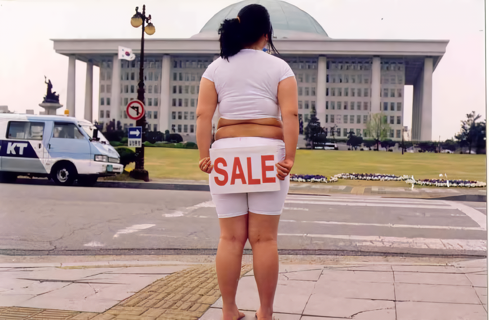
현대사회의 미적 욕망을 가진 외모지상주의와 얼짱, 몸짱 신드롬 등 지나친 하나의 성향과 그 유행을 따르려는 사람들의 유난스러움으로 함축 은유한 명제를 붙인 사진이다. 여기에서 등장된 인물은 그러한 미적 환영 기준에서 멀어지고 욕망을 무시하고, 하나의 해프닝으로 끝나버리는.. 상처과정 속의 인물상황의 재현이다. 그것은 동시에 진행되는 사회의 구조적(시스템)문제와 그곳에서 꿈을 꾸고 또 현실 속에 안주하는 개인의 문제를 포함시킨다. 개인의 상황을 규정 할 수 있다는 문제, 그것은 사회 구조적 시스템이 얼마나 개인에게 보편화 또는 일반화 되었는지 또한 강요하고 현실을 뒤바꾸어 놓았는지의 문제를 보여주기 충분하다. 난 분명 다른 사람과 다른 코드와 취미와 미의 기준을 가지고 있다. ■ 지정아
_waifu2x_photo_noise3_scale.png)
졸업식 날 다들 양복을 입고 모여든다. 얼굴을 보아하니 뷰티샆에 많은 돈을 주었나보다 그런데 옷도 똑같고, 화장도 똑같다. 포즈와 웃음마저 똑같다. 나는 똑같아 지기 싫어 바디페인팅을 하였다. 그리고 남들에게 놀림을 당한다. 남들은 나를 놀리고 나는 그들을 보며 비웃는다. 나는 너희들의 거울인지 너희들은 알고 있니? ■ 문성원
_waifu2x_photo_noise3_scale.png)
이토 아카네_Ito Akane는 구상적인 만화 이미지를 사용한 회화 작품으로, 일상에 잠복하고 있는 유머러스한 세계를 화폭에 끄집어내면서 어딘가 슬픈 정서를 표현하고 있습니다.
_waifu2x_photo_noise3_scale.png)
이시구로 치하루_Ishiguro Chiharu는 친구가 자고 있는 모습을 철야로 촬영한 사진작품으로, 낮의 사회적인 모습으로부터 분리된 사적(private)인 무방비인 모습을 보여주고 인간 존재의 생을 생각하게 만든다.
_waifu2x_photo_noise3_scale.png)
쟈가 이치로_Jaga Ichiro는 독특한 캐릭터를 사용한 팝적인 회화로, 웃음(유머)을 예술 안에 거두어들이려고 한다.
_waifu2x_photo_noise3_scale.png)
무라타 진_Murata Jin은 세대간의 가치관의 차이에 주목한다. 특히 어떤 시간이나 사실, 사건들을 서로의 기억이나 진술을 바탕으로 시(詩)적으로 재구성하는데, 그로써 기억의 틈이나 엇갈림을 포착해낸다. 이번 전시에는 자신의 시적인 작업을 한국어로 번역해 한층 더 '언어의 틈'을 발견하게 된다.
_waifu2x_photo_noise3_scale.png)
타다 토모미쯔_Tada Tomomitsu은 드로잉을 편성하는 설치 작품으로, 일본의 전통 문화로부터 잘라내 온 이미지와 현대적인 이미지(아이콘)를 혼합해 자신의 독특한 세계를 구성해 낸다. 과거와 현재, 전통과 현대의 이미지들이 파편화되는 동시에 공존의 세계의 이미지를 구축해낸다.
_waifu2x_photo_noise3_scale.png)
콘도 사요코_Kondo Sayoko는 옛 일본이 가지고 있는 어두운 이미지에 대한 동경으로부터, 전시대적 이미지를 사용한 인형들을 통해 영상스토리를 만들어 간다. 특히 탐미적이고 퇴폐적인 일본의 미감을 사소설적으로 표현해 보여 줍니다.
_waifu2x_photo_noise3_scale.png)
카와미 슌_Kawami Syun은 기성품에 조금 가공한 신기한 입체 작품으로, 보아서 익숙한 일상을 재확인하는 것을 재촉합니다.
■ 스톤앤워터
2004년 7월 20일 오후 6시 강력한 확장전 공식 오픈 및 작가와의 토크가 시작되었다.
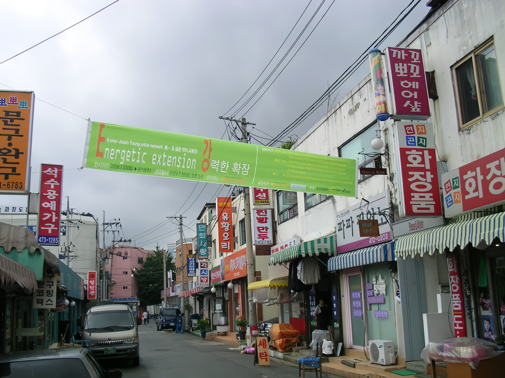 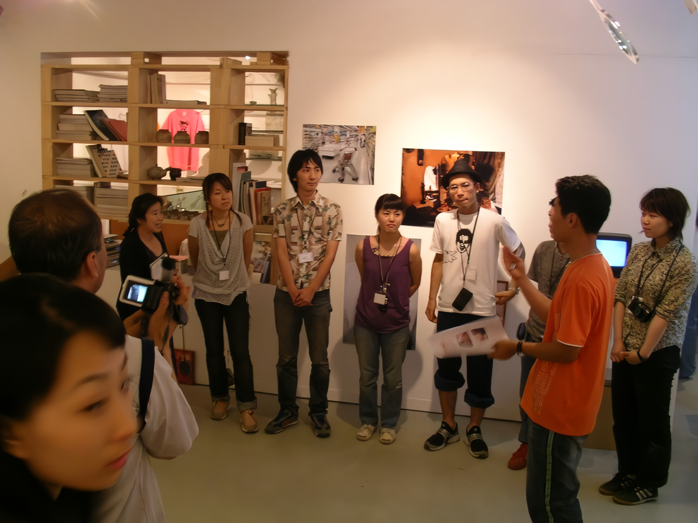
2004년 7월 18일 전시 준비 중
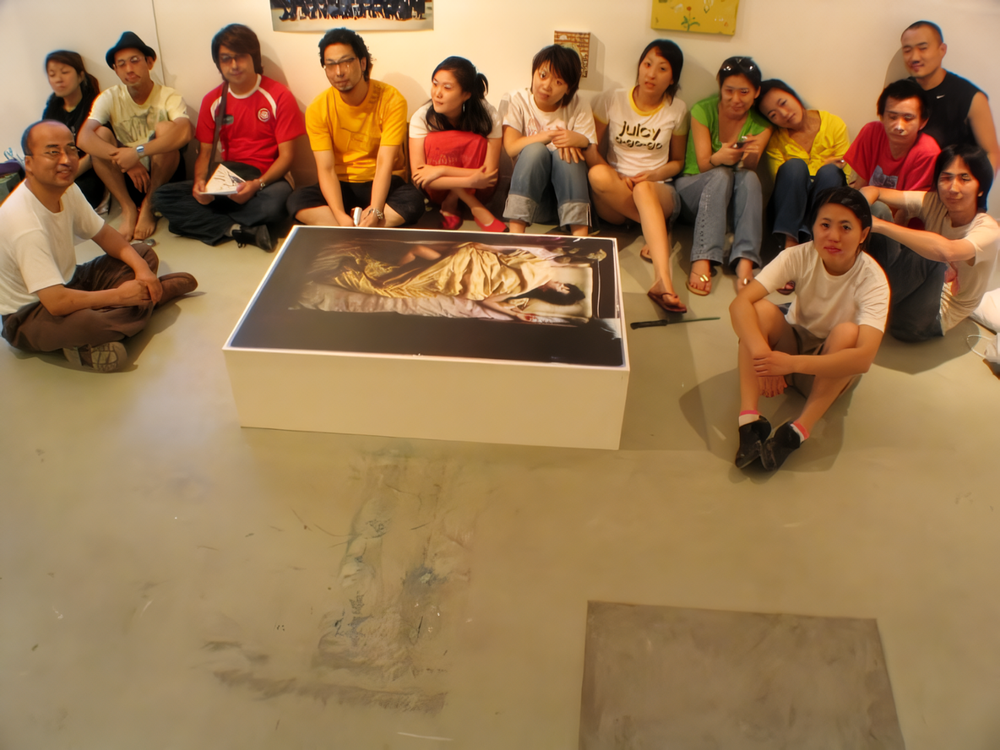 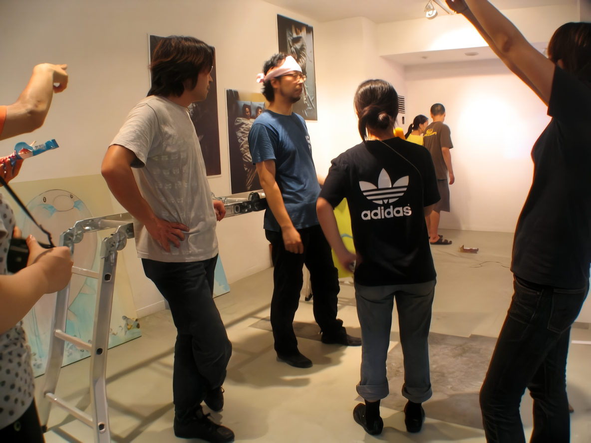 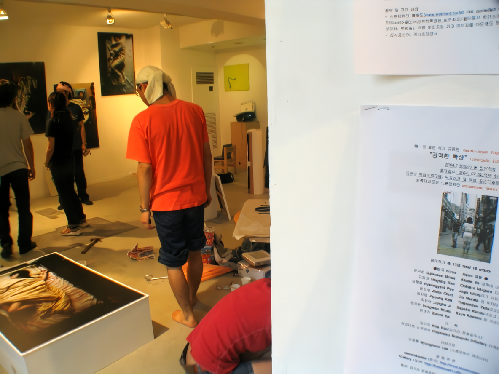 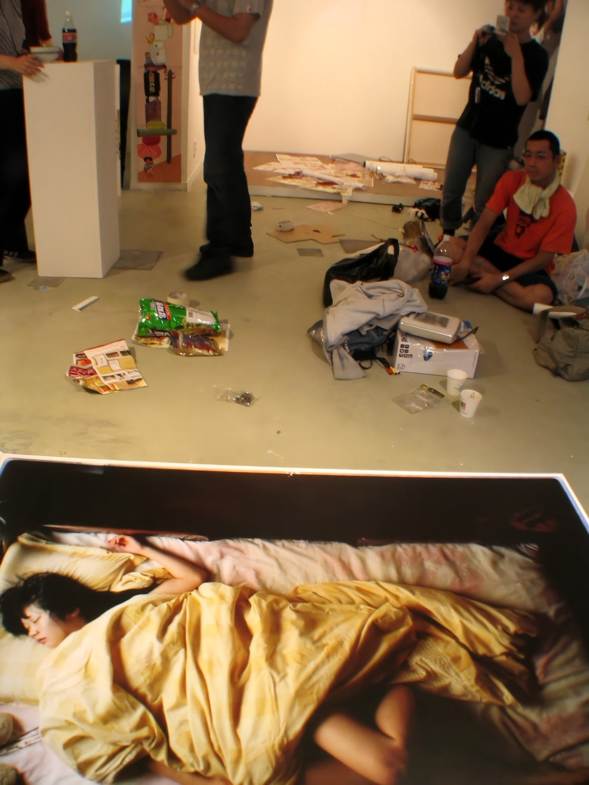 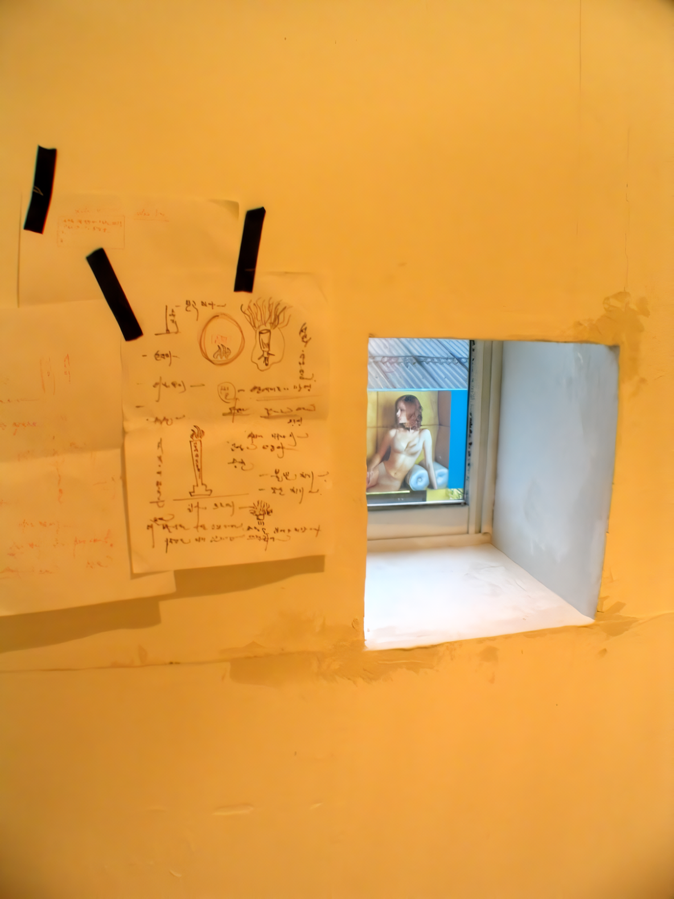 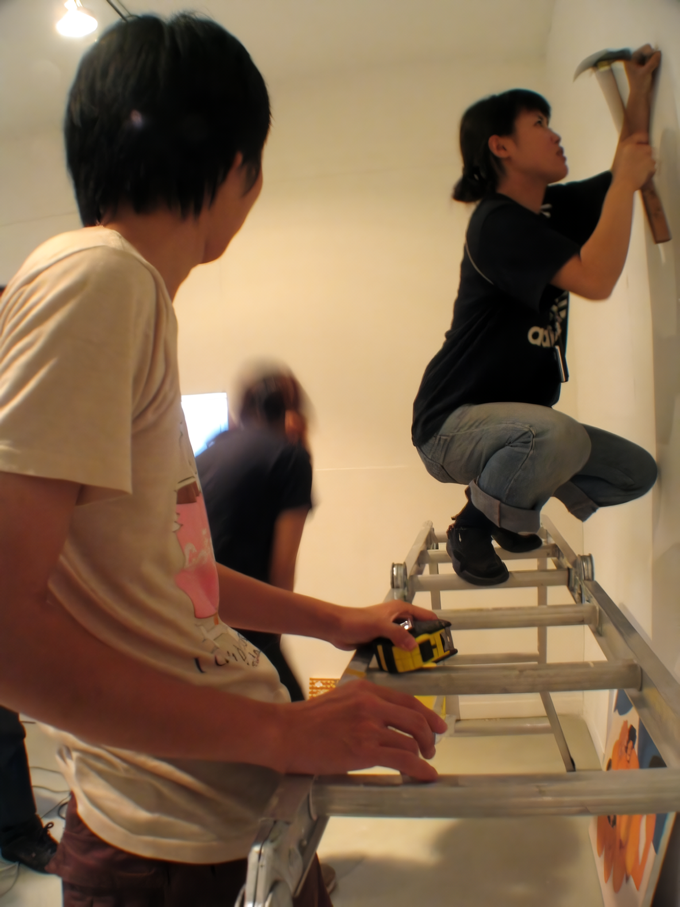 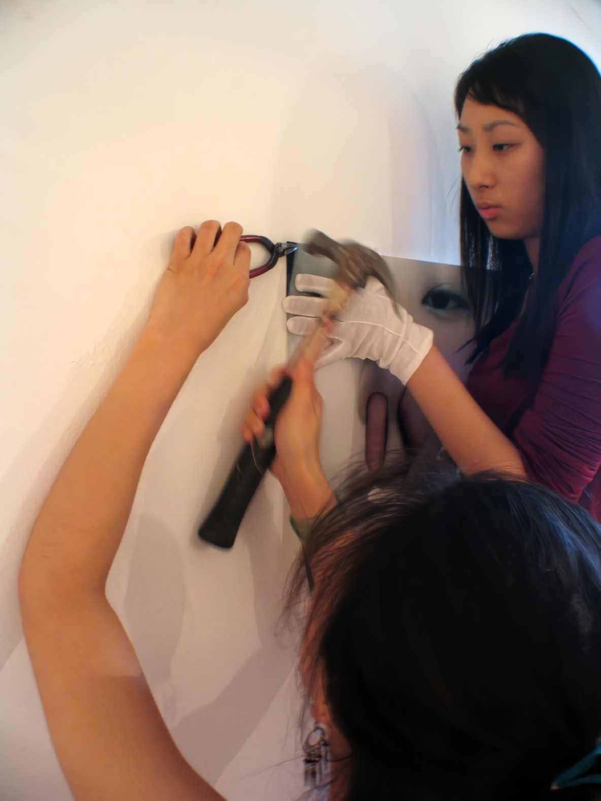 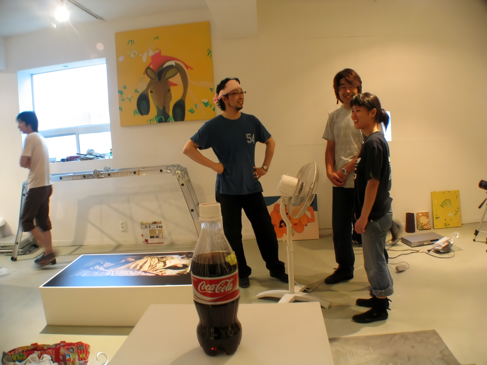 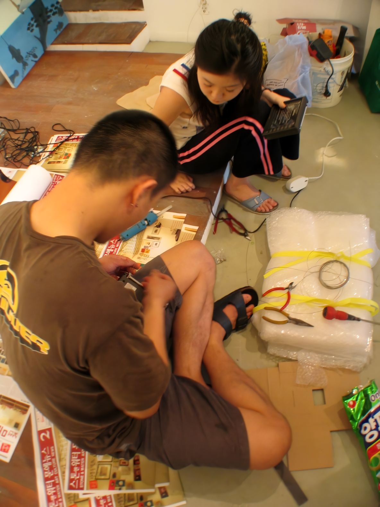 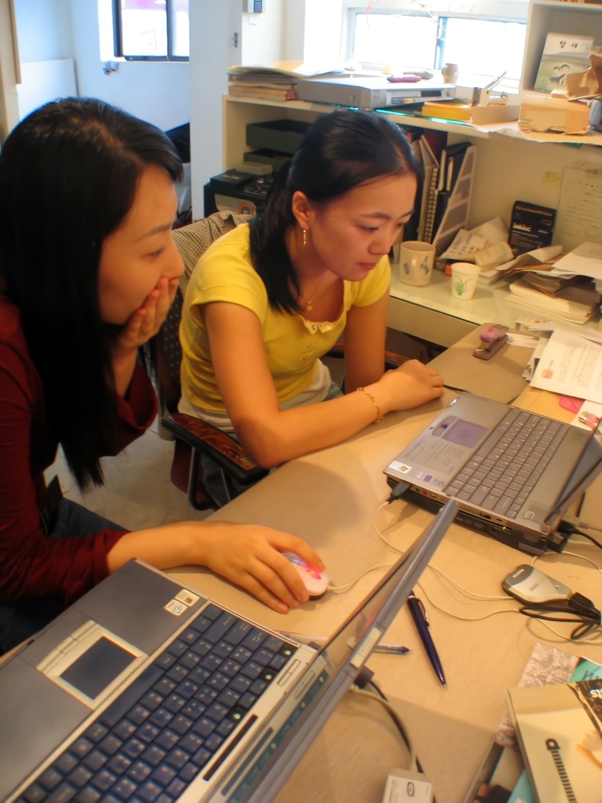 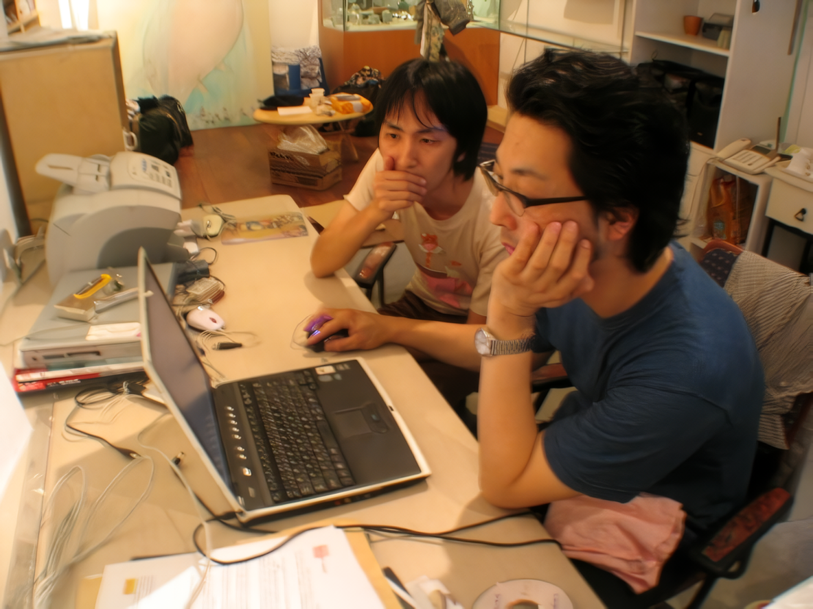 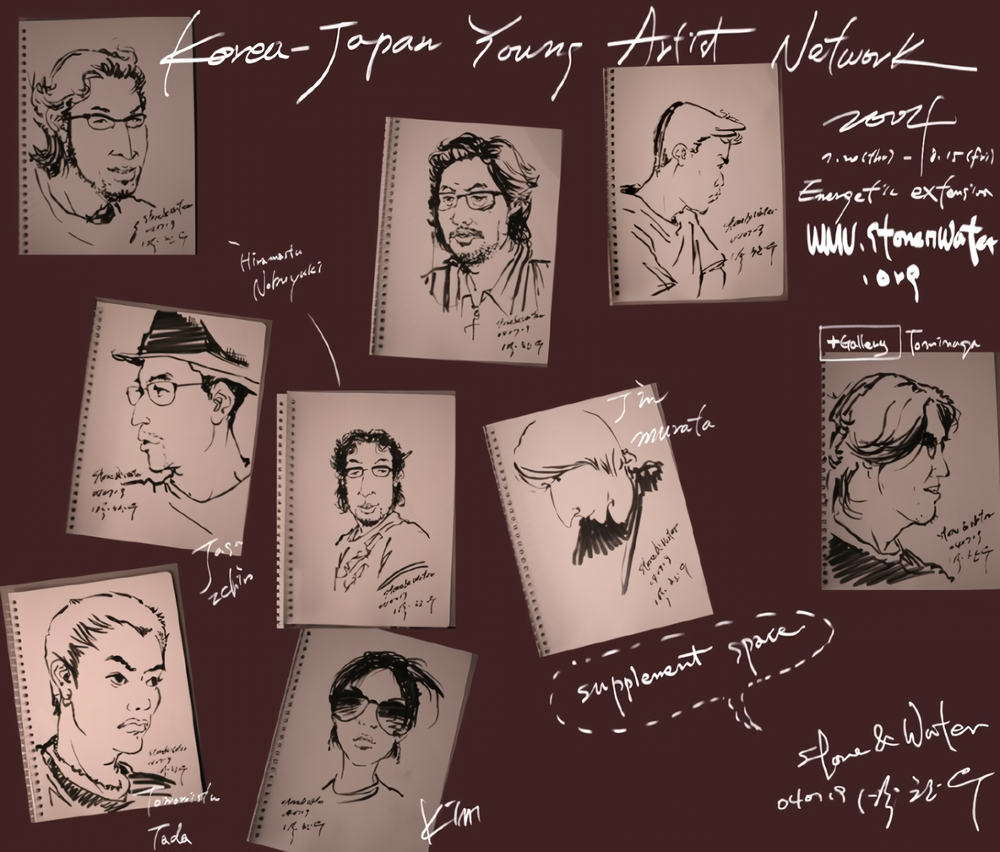